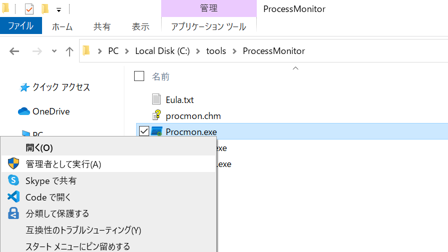
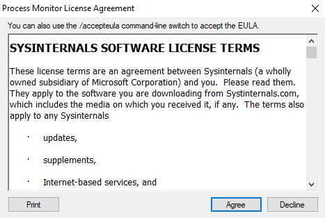
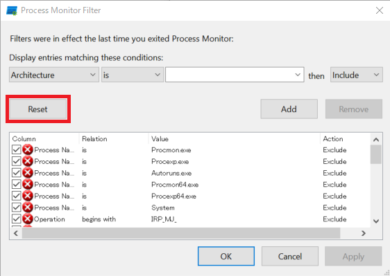
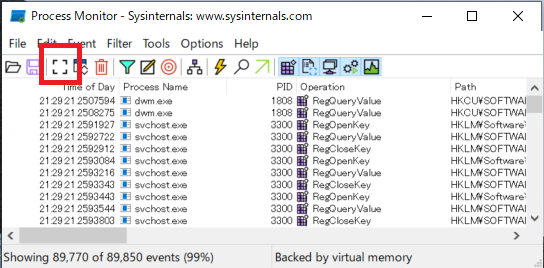
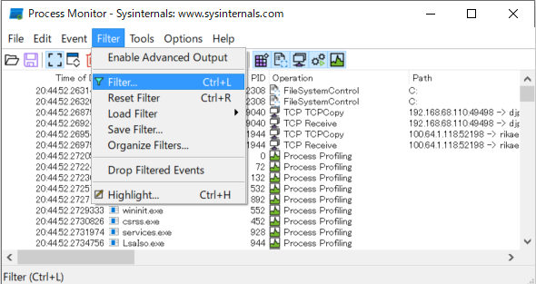
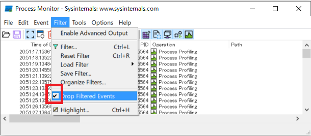
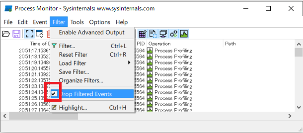
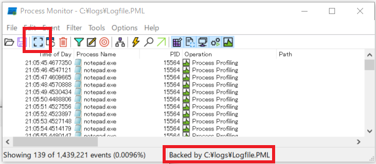
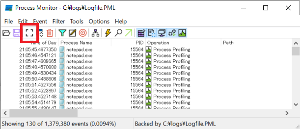
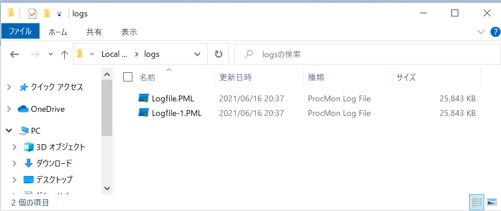

こんにちは、Japan Developer Support Core チームの松井です。今回は、Process Monitor の概要とログの採取手順をご案内します。
Process Monitor は弊社が無償で公開している Sysinternals に含まれるツールの一つです。Process Monitor では、動作しているプロセスによるファイルやレジストリへのアクセス、プロセスやスレッドの起動や終了といったアクティビティについて、記録や解析を行うことが可能です。ファイルやレジストリなどに関する問題を調査するための直接的な手段としてだけでなく、お客様のアプリケーションの動作やプロセス間の関係性を正確に把握して調査方針を検討する目的などでも、情報採取をお願いさせていただく場合があります。
情報採取時の影響について
情報採取の実施中はコンピューターの CPU やディスク IO の負荷が高まる可能性がありますが、通常はシステムやアプリケーションの動作に大きな影響を与えることはありません。ただし、採取時間やコンピューター上で実行しているプロセスの動作に大きく依存するものの、ログのサイズは数 GB を超えることもありますので、長期間情報採取をし続ける場合は工夫が必要です。
サポート エンジニアから情報採取をお願いさせていただく場合は、発生している問題の内容だけでなく、お客様環境の詳細やご利用状況なども踏まえて最適な設定と手順を検討します。ご懸念点やご質問等がある場合はお気兼ねなく担当エンジニアへご相談ください。
ツールの入手方法
Process Monitor は以下の URL から無償でダウンロードしてご利用いただけます。
https://docs.microsoft.com/en-us/sysinternals/downloads/procmon
情報採取を行うコンピューターの任意のフォルダーに展開してください。
情報採取手順 (一般的な手順)
Process Monitor ツール (procmon.exe) を管理者として実行します。
初回起動時はライセンス条項の確認画面が表示されますので、内容をご確認いただき [Agree] ボタンを押下してください。
[Process Monitor Filter] ダイアログが表示された場合は、[Reset] ボタンを押下した後 [OK] ボタンを押下してください。
自動的に情報採取が開始されますので、ツールバーから Capture アイコンをクリックして情報採取を停止し、Clear アイコンをクリックしてログを消去してください。
情報採取を行う直前までアプリケーションの操作を進めます。
ツールバーから Capture アイコンをクリックして情報採取を開始します。

アプリケーションの操作を進めて問題を再現させます。
問題が再現したら、 Capture アイコンをクリックしてログ採取を停止します。
メニューから [File] - [Save] を選択します。
[All events] と [Native Process Monitor Format (PML)] を選択
し、任意の場所にログを保存してください。手順 10. で保存したログを弊社へお送りください。また、おおよその問題再現日時をお知らせください。
情報採取手順 (長期間の採取)
再現手順が明らかでないなどの理由でログを長期間採取し続ける必要がある場合は、(1) フィルターを有効にして採取対象を限定、(2) フィルターされたログを破棄、(3) ログの格納先を既定の仮想メモリではなくファイルへ変更、のいずれかもしくはすべてを実施します。
Process Monitor ツール (procmon.exe) を管理者として実行します。
初回起動時はライセンス条項の確認画面が表示されますので、内容をご確認いただき [Agree] ボタンを押下してください。
[Process Monitor Filter] ダイアログが表示されなかった場合は、メニューから [Filter] - [Filter] を選択してダイアログを表示します。
[Reset] ボタンを押下した後、必要なフィルターを追加して [OK] ボタンを押下してください。(下図では、プロセス名が “notepad.exe” のログに一致するものを採取対象とするフィルターを追加しています。)
メニューから [Filter] - [Drop Filtered Events] を選択します。
 念のため、同メニューにチェックが入っていることを確認してください。
念のため、同メニューにチェックが入っていることを確認してください。ツールバーから Capture アイコンをクリックして情報採取を停止し、Clear アイコンをクリックしてログを消去してください。
メニューから [File] - [Backing Files] を選択します。

[Process Monitor Backing Files] ダイアログで、[Use file named:] を選択して保存先ファイル名を指定して [OK] ボタンを押下します。次回採取時から変更が反映されることの確認ダイアログが表示されますので [OK] ボタンを押下します。
念のためもう一度ツールバーから Clear アイコンをクリックしてください。
情報採取を行う直前までアプリケーションの操作を進めます。
ツールバーから Capture アイコンをクリックして情報採取を開始します。このとき、ステータス バーの右側が “Backed by virtual memory” から “Backe by XXXXX” に変わっていることをご確認ください。 
アプリケーションの操作を進めて問題を再現させます。
問題が再現したら、Capture アイコンをクリックしてログ採取を停止します。
メニューから [File] - [Save] を選択します。
[All events] と [Native Process Monitor Format (PML)] を選択
し、任意の場所にログを保存してください。手順 15. で保存したログを弊社へお送りください。また、おおよその問題再現日時をお知らせください。
※ Backing Files で指定したフォルダーには情報採取中に記録されたログが一時ファイルとして保存されており、サイズが大きくなる場合は複数の連番のファイルに分割されています。手順 15. で結合されてこれらのファイルは不要になりますので、保存が終わりましたら削除して構いません。 
情報採取手順 (コマンドライン)
Process Monitor はコマンドライン オプションを指定して操作することも可能です。スクリプトによる自動採取などで活用できます。
ログ出力先フォルダーを作成しておきます。(C:\Logs など)
管理者としてコマンド プロンプトを起動します。
以下のコマンドを実行して Process Monitor による情報採取を開始します。
1
C:\sysinternals\procmon.exe /AcceptEula /NoFilter /Quiet /BackingFile c:\logs\logfile.pml
問題を再現させます。
以下のコマンドを実行して Proces Monitor による情報採取を停止します。
1
C:\sysinternals\procmon.exe /terminate
- 手順 3. で /BackingFile オプションに指定したファイルおよび連番が付与されたファイル一式を弊社へお送りください。また、おおよその問題再現日時をお知らせください。
※ /AcceptEula オプションを指定するとライセンス条項を確認するダイアログは表示されません。ライセンス条項に同意したものと見做されますので、同梱されている Eula.txt を事前に確認した後に手順を実施してください。
※ /terminate オプションを指定して procmon.exe を実行すると、実行中の procmon.exe は情報採取を停止して未記録のログをコミットしてファイルに保存します。
※ その他のコマンドライン オプションは procmon.exe /? で確認できます。
本ブログの内容は弊社の公式見解として保証されるものではなく、開発・運用時の参考情報としてご活用いただくことを目的としています。もし公式な見解が必要な場合は、弊社ドキュメント (https://docs.microsoft.com や https://support.microsoft.com) をご参照いただくか、もしくは私共サポートまでお問い合わせください。